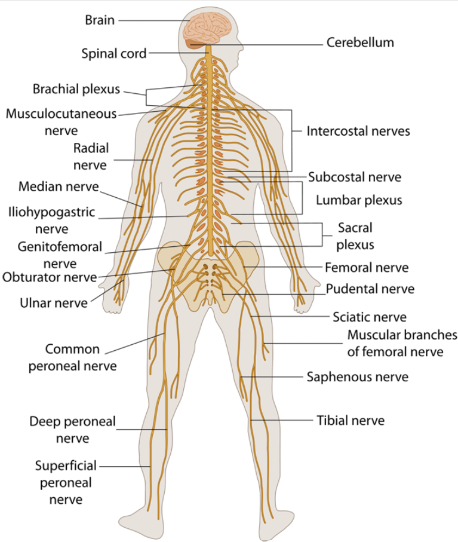
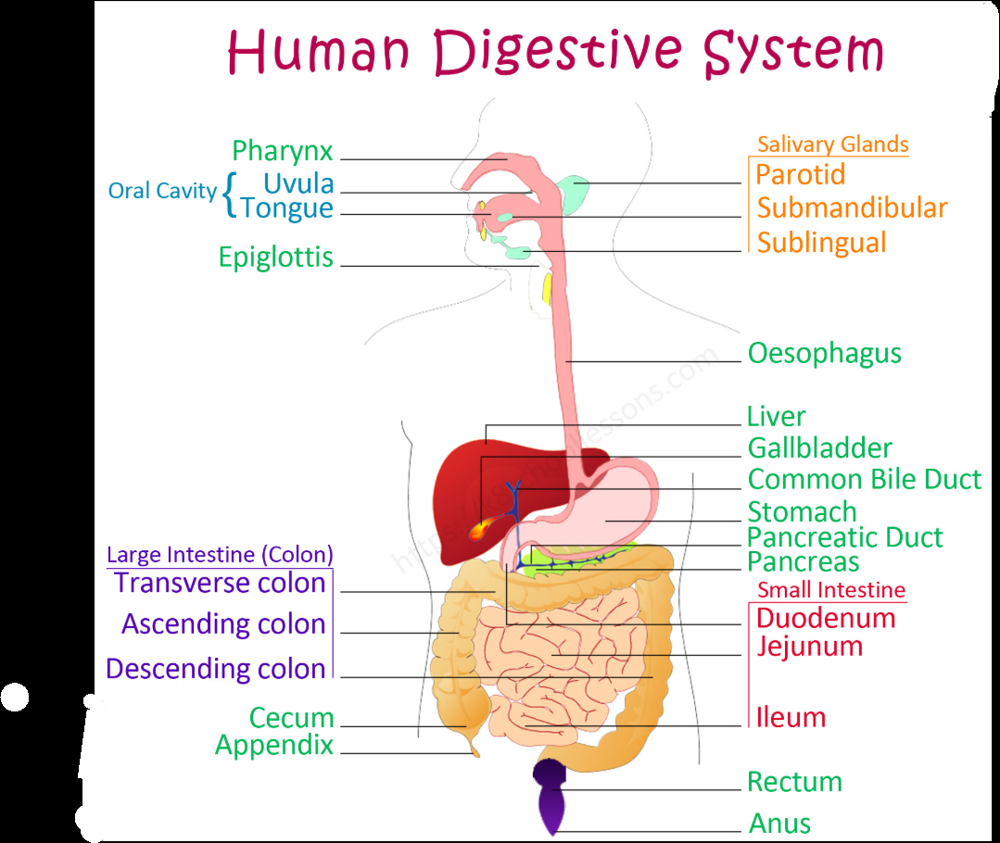
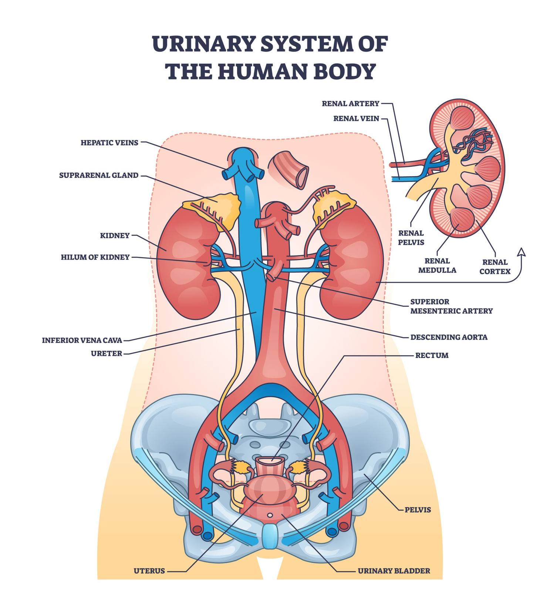
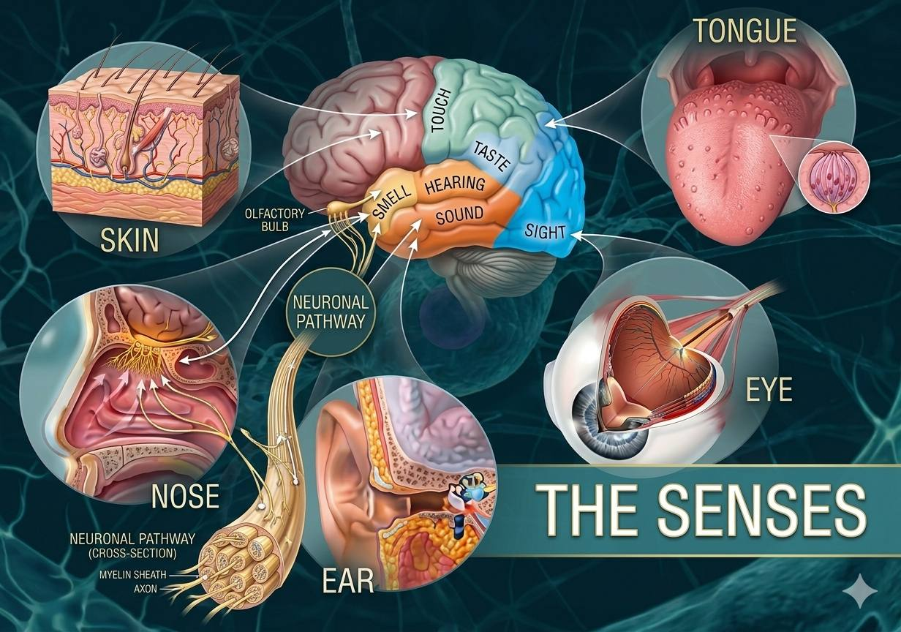
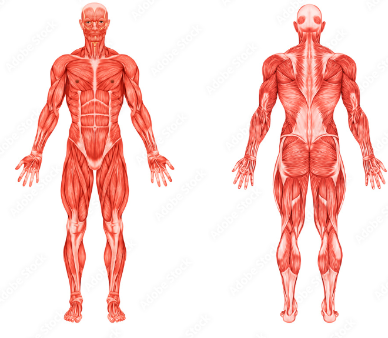
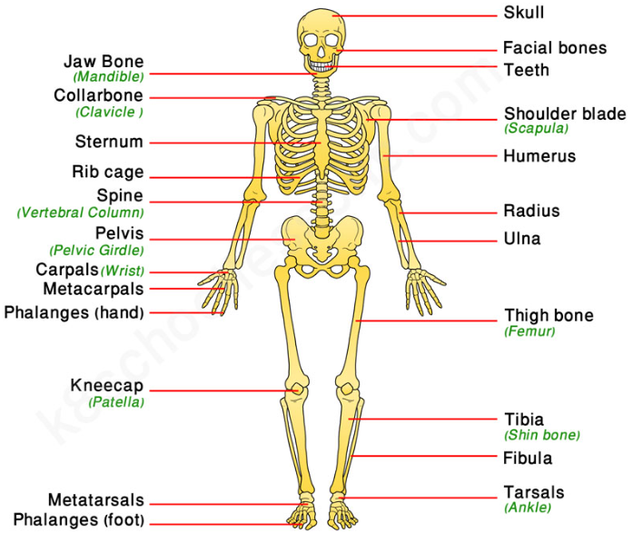
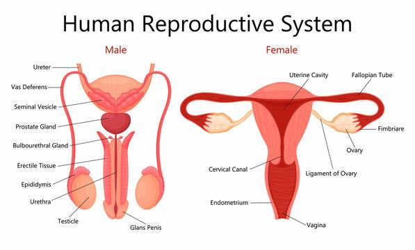
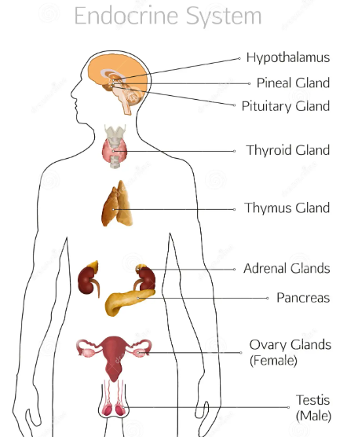
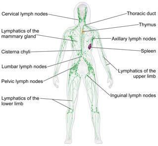

Nervous System
Controls and coordinates body activities. Processes information from the environment and directs responses through electrical signals.
- Major Organs: Brain, spinal cord, nerves.
- Function: Control of actions, thoughts, memory, and reflexes.

Digestive System
Breaks down food into nutrients that the body can absorb and use for energy, growth, and repair. Eliminates undigested waste.
- Major Organs: Mouth, stomach, intestines, liver, pancreas.
- Function: Digestion and absorption of nutrients.

Excretory System
Removes waste products from the body and maintains water and electrolyte balance. Plays a key role in detoxification and homeostasis.
- Major Organs: Kidneys, bladder, ureters.
- Function: Filtration of blood, removal of waste, regulation of fluids.

Integumentary System
Protects the body from external harm. Regulates temperature, prevents dehydration, and allows sensation of touch, pressure, and pain.
- Major Organs: Skin, hair, nails.
- Function: Protection, temperature regulation, sensory reception.

Sensory System
Allows perception of the environment. Includes organs that detect light, sound, smell, taste, and touch, sending signals to the brain for interpretation.
- Major Organs: Eyes, ears, nose, tongue, skin.
- Function: Detection of stimuli and sensory perception.

Muscular System
Provides movement, posture, and heat production. Muscles contract to move bones, pump blood, and aid digestion.
- Major Organs: Skeletal muscles, smooth muscles, cardiac muscle.
- Function: Movement, stability, circulation, digestion.

Skeletal System
Provides structure, support, and protection for the body. Stores minerals and produces blood cells in bone marrow.
- Major Organs: Bones, cartilage, ligaments.
- Function: Support, protection, movement, blood cell production.

Reproductive System
Ensures survival of species by producing offspring. Includes organs that produce gametes and support fertilization and development.
- Major Organs (Male): Testes, penis, prostate gland.
- Major Organs (Female): Ovaries, uterus, fallopian tubes, vagina.
- Function: Production of gametes, fertilization, development of offspring.

Endocrine System
The endocrine system regulates body processes through hormones. It controls growth, metabolism, reproduction, and stress responses by releasing chemical messengers into the bloodstream.
- Major Organs: Pituitary gland, thyroid gland, adrenal glands, pancreas, ovaries, testes.
- Function: Hormone production and regulation of body functions.

Lymphatic System
The lymphatic system defends the body against infections and maintains fluid balance. It transports lymph, removes toxins, and supports immune responses.
- Major Organs: Lymph nodes, lymph vessels, spleen, thymus, tonsils.
- Function: Immunity, fluid balance, removal of pathogens.

Homeostasis
Homeostasis is not a single system but the combined effort of all organ systems to maintain a stable internal environment. It ensures constant body temperature, pH, water balance, and nutrient levels despite external changes.
- Major Contributors: Nervous system, endocrine system, excretory system, circulatory system.
- Function: Regulation of internal conditions for survival and efficiency.
Conclusion
The human body is a remarkable network of organ systems, each with specialized roles yet deeply interconnected. From the heart driving circulation to the lungs enabling respiration, from the brain orchestrating control to the kidneys filtering waste, every system contributes to the balance of life. Together, these systems maintain homeostasis — the stable internal environment that allows growth, adaptation, and survival in changing conditions. Understanding organ systems not only highlights the complexity and efficiency of the human body but also reminds us of the delicate harmony required to sustain life.